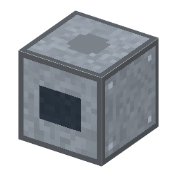

説明
①子ども 軽くてたくさん貯められる、充電できる電池。スマホや電気自動車の電池。
②学生 4MJ（鉛蓄電池の4倍）、充電・放電とも 20kW、充電は 95% が貯まる（鉛蓄電池は 85%）。どの面からも充放電、隣の機械へ直接放電もする。直流だけ。壊しても残量はアイテムに残る。本物の軽さ：同じ電気を貯めるのに、鉛蓄電池（1kg で約 35Wh）の約 1/3〜1/4 の重さ（LFP の電池 1kg で約 90〜160Wh）。
③大人 充電すると、リチウムのイオンが正極から出て、電解液を通り、黒鉛の層のすき間にしまい込まれる。放電でもどる。金属のリチウムを使わないので、昔のリチウム電池より安全になった。1985年に吉野彰が原型を作り、1991年にソニーが売り出した（2019年ノーベル化学賞：グッドイナフ・ウィッティンガム・吉野）。
④ガチ ⚠️ 1991年の電池の正極はコバルト酸リチウム LiCoO2。このゲームではコバルトがまだ無いので、1997年にグッドイナフの研究室が出したリン酸鉄リチウム LiFePO4 を使う（燃えにくく長持ちで、今の電気自動車にも多い）。⚠ 本物は、こわしたり熱したりすると発火することがある。
作り方
使い道
→ 組立台組み立て（smartphone）・20 秒 →
部品表で組み立てる。電気なし